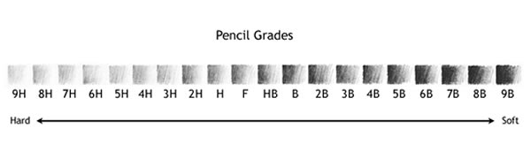

Shading and Rendering
Before we start, there are several ways to achieve shading and rendering using different mediums, but we will start by differentiating the traditional materials
1 - Pencil - the most common and widely available medium, it typicaly contain the numbers 1, 2 and 3 refering to their softness and hardness the #1 is same as to “B” in which the lead is much softer that gives the darkest shade, the #3 is the most hardest as similar to ”H” giving you the most lightest shade, while the #2 is in between refering to as “HB”.now let's talk about the grade scale of graphite pencil system, this from 9H, 8H, 7H, 6H, 5H, 4H, 3H, 2H, H, F, HB, B, 2B, 3B, 4B, 5B, 6B, 7B, 8B, 9B, and some times it expand to 14B as we discuss earlier the “B” gives a more darkness as it goes up because of it’s softness while opposite to the “H” where the higher the number the lightest shade it gives, on the other hand “F” referes to Fine similar to HB but lighter
2 . Carbon pencil it either made of terracota, sanguine or charcoal, the common color it used is black or red-orange, similar to a rusty color. Sometimes it’s hard to erase, so better to start with a light shade
3. Charcoal- it’s either a vine charcoal, compressed charcoal or powdered charcoal.
A)vine charcoal is very soft and fragile and can be broken with a snap, this gives a very dark tone, all sides can be use from top to side giving wide range of angle it can be used on, so sometimes artist incase it in aluminum foil to prevent it from spreading it to their hands.
B)Compressed charcoal it is sometimes much darker than vine charcoal, it is sometimes made with gum binder to held it together or wrapt around paper sheet, wax or encased in wood. It sometimes limits the wide range of exposed layer while the other variant gives a harder surface that can be utilize it’s edges.
C)powdered charcoal can give you the most flexibility, it sometimes used in shading and blending techniques, it can be either used by hand, paint brush, pallet knife and even a cloth to be put in canvas.
4 . pen- there are a lot of shapes and forms, either it the most common ball point pen, and gel pen. while the much uncommon pen used on casual use is fountain pen (ink pen), dip pen, quil pen, technical pen, fineliner pen (technical pen), highlighter, glass dip pen, and water color pen, it usaully used at the line art, out line but it can also be used for hatching technique for precise line stroke either by giving it’s shape, form and it’s volume
A) Ball point pen - used in everyday writing, it has a little ball in it’s tip dispersing the ink from it’s cartirage, it’s commonly comes with black, white, blue, and red, it’s line weight is very limited, it can easily dry on paper and other surfaces because it’s made out of alcohol, fatty acid and sometimes lubricant.
B)Gel pen - comes with a wide range of different and vibrant colors, it gives a smoother use as it is water-based, giving less strain in your wrist. Be careful, as it might smudge on paper when it makes contact in your hands Fountain pen - One of its greatest advantages is that it is reusable and can survive a decade of use with proper care and maintenance. It’s ink comes with a lot of variety from shimmer, water resistant, lubricated, sheen, pigmented, fluorescent, and fast drying, giving this a lot of flexibility on where you want to use your fountain pen on your art. it’s nib sizes range from fine, medium, large, calligraphy chisel size, and flexible. Its price range can be from cheap to ultra luxury due to the material and brand it uses, whether it’s made out of plastic, metal, stainless steel, acrylic or even gold, ranging from simple design to extravagant and ornate.
c) Dip pen- commonly use in line art because its nib gives a wide range of flexibility, it is commonly use in creating manga, it’s inexpensive, making it desirable for beginners, it’s has a wide range of nib type, such as ”G nib”, spoon nib, and mapping nib. It’s ink have wide variety of color selection. it can also be put in a quil pen with a special hole for inserting different type of nibs.
D) Quill pen- it made from a natural material from a large birds such as turkey or goose, the very bottom of it’s part where carve to a certain angle and shape and baked in sand to harden, then on it’s final form it can be used like a dip pen where ink rest on the tube inside of the feather giving it’s calligraphy use.
E) Technical pen and fineliner- it comes with a precise tip size ranging from 0.1, 0.38. 0.5, 0.7, and 1. This is great for hatching technique and line art, giving you full control on the line weight. This is commonly used in architectural buildings, background elements, and other more. Its ink is mostly water-resistant and fast drying.
Tone and value
Objects are defined by lights and shadows, representing the 3-dimensional object within the defined space, understanding how the light affects the material adding to the realism of an object there are several ways how the light interact with an object
A) Light source- this is where the light comes from, it can come from a single source, such as the sun, or a multiple source, such as the light used in a bar or a concert. It can come from different colors, hues, and values, and it also influences the atmosphere around your drawing; the brightest one would dominate the whole surface, making other lights much dimmer in color.
B) Direct Light- this is the area where the surface of an object that bounces back the most light, it directly receives the full light, it washes out the base color of an the object.
C) Highlight- caused by the direct light giving it the brightest spot, this is usually added in the final touch in art
D) shadow- these are parts that lacks the reach of light from the object
E) core shadow- this is the darkest part of an object
F) Reflected light- the light where the shadow bounce to the other surface
G) Cast Shadow- the object block other material from getting light so the object below or sometimes above lack a light, so these create a shodow other than the main material.
Anatomy tutorial
1. Foundations & Proportions Begin with body’s basic proportions. A common standard is the 8-head-high technique using the height of the head as a consistent unit to map out the rest of the body. This helps you place major landmarks such as head, shoulder, chin, nipples, navel, hips, crotch, buttocks, fingers, knees, and heels.
2. Simplifying the Skeleton and Structure Once you’ve laid down correct body proportions, it’s time to simplify the skeletal structure. Think of the ribcage as an oval, the pelvis as a tilted box, and joints as spheres. This establishes a "skeleton" framework that’s flexible and easy to manipulate.
3. Overlaying Muscles and Forms On top of your simplified skeleton, start adding anatomical mass—the muscles. Concentrate on large, visible muscle groups like the deltoids, pectorals, biceps, and quadriceps. Visualizing these as simplified shapes (like cylinders and wedges) helps keep them understandable.
4. Gesture, Flow & Practice Gesture is the heartbeat of figure drawing—it’s the first flowing line that captures action, rhythm, and emotion. Before tightening the forms, sketch Fluid, sweeping lines to express motion and weight. Doing regular gesture studies followed by anatomy overlays improves both expressiveness and accuracy in your work.
Color theory
1. The Color Wheel & Its Structure Color theory begins with the color wheel—a circular arrangement of colors illustrating how they relate to each other. The traditional artists' model (RYB) features 12 colors: three primary (red, yellow, blue), three secondary (green, orange, purple), and six tertiary (blends of primaries and secondaries)
2. Terms to Know: Hue, Saturation, and Value
*Hue refers to the pure, base color—like blue or red.
*Saturation (or chroma) describes color intensity—how vivid or muted it is.
*Value indicates the lightness or darkness of a color, spanning black to white
3. Tint, Shade, & Tone: Modifying Colors
A tint is made by adding white to a hue, lightening it.
A shade results from adding black, darkening the hue.
A tone generally means adding gray, muting or reducing saturation
4. Color Harmonies & Schemes Color schemes help artists create visually pleasing combinations:
Monochromatic: variations (tints/shades/tones) of one hue.
Analogous: colors next to each other on the wheel (e.g., blue-green-cyan).
Complementary: opposites on the wheel that create vibrant contrast.
Triadic and split-complementary: more complex schemes that balance harmony with contrast
5. Warm vs. Cool Colors Colors are also categorized by temperature:
Warm colors (reds, oranges, yellows) evoke energy and pull forward visually.
Cool colors (blues, greens, purples) convey calm and tend to recede in an image
Shading
Shading Basic Shapes Before shading complex figures, always start with basic geometric forms—because every complex subject can be broken down into these.
Sphere:
*Light source at the top left → Highlight on top-left curve
*Core shadow on bottom-right curve
*Soft gradient transition from light to dark
*Cast shadow on the opposite side of the light source
*Small strip of reflected light at the edge of the shadow side
Cube:
*Identify 3 visible planes: light side, mid-tone side, and shadow side
*Edges between planes have hard transitions
*Cast shadow shape is angular and follows the cube’s edges
Cylinder:
*Light source on one side creates a smooth, vertical gradient from light to dark
*Core shadow runs along the length of the cylinder opposite the light
*Cast shadow shape is elongated and curves slightly based on the cylinder’s orientation
Cone:
*Highlight near the point facing the light source
*Core shadow along the opposite side of the cone
*Cast shadow follows the cone’s base curve
2. Shading
Explore a variety of methods to suit different textures and styles:
Hatching: Closely spaced parallel lines for gradual darkening.
Cross-hatching: Overlaying lines to deepen value.
Blending: Smooth transitions using a blending stump or finger.
Rendering: Lifting graphite with an eraser to create highlights.
Stippling: Building tone through many small dots.
Random lines: A freer, looser approach to shading.
3. Layer and Render
Start by identifying your light source and how it affects your form.
Establish a full value range—from light to dark.
Use layering: begin with lighter values, gradually build depth by adding darker tones. Blend gently as needed.
Use the eraser as a tool for popping out highlights within your rendered forms.
4. Light Behavior & Edge Quality
Understand how light either softens or sharpens edges:
Soft edges suggest round, continuous forms and are created by gentle transitions.
Hard edges define planes and forms clearly—great for dramatic lighting.
Perspective Tutorial for Drawing the Human Body
1. Understanding Foreshortening
Foreshortening happens when parts of the body are angled toward or away from the viewer, causing them to appear shorter and sometimes wider than they really are. This effect is stronger at extreme angles. For example, an arm pointing toward the viewer will look shorter, even if its real length hasn’t changed. Understanding this optical compression is the key to drawing convincing poses.
2. Matching Body and Environment Perspective
When drawing figures within a scene, they must share the same horizon line and vanishing points as the background. The height of the figure in relation to the horizon will determine how much of the top or bottom planes are visible. Figures that are the same distance from the viewer will align in scale, and those closer or farther will adjust proportionally according to perspective rules.
3. Proportion in Relation to the Horizon
*The horizon line represents the viewer’s eye level, and it directly influences how much of a figure is visible from above or below.
*If a figure’s head is above the horizon, you will see the underside of the chin and the tops of the shoulders.
*If a figure’s head is below the horizon, you will see the top of the head and shoulders, and the underside of the body will be hidden.
*Figures closer to the viewer will appear larger; those further away shrink toward the vanishing points, but their relative proportions remain consistent if they are standing on the same ground plane.
*By aligning the head and foot heights of multiple figures along guidelines to the vanishing point, you can keep them at the correct scale in perspective.
4. Training Your 3D Drawing Skills
Perspective for the human body is not only about placement in a scene—it’s also about constructing the figure itself in three dimensions. Start with gesture to capture the movement, then block in the main masses (head, ribcage, pelvis) as solid volumes. From there, align each volume according to the perspective grid. This helps keep proportions correct and forms consistent at any angle.
shading and rendering
Light dramatically affects how a drawing appears. To capture realism, artists must show not only the object itself but also how light interacts with it. Light and shadow define form, and their placement depends on the light source’s direction, strength, and position.
Key elements of light and shadow include:
*Light Source – The direction from which light comes.
*Direct Light – Areas receiving full light.
*Highlight – Brightest spot, often on reflective surfaces.
*Shadow – Areas blocked from light.
*Core Shadow – Dark band on rounded forms that helps show volume.
*Reflected Light – Light bouncing into the shadow from nearby surfaces.
*Contact Shadow – Thin dark line where the object touches another surface.
*Cast Shadow – Shadow projected onto another surface.
Value refers to the lightness or darkness of tones. Artists simplify nature’s wide range of values into a manageable scale—commonly five to nine steps from light to dark.
Basic shading steps:
1.Separate your subject into light and dark areas.
2.If drawing from life, observe and squint to simplify values.
3.If drawing from imagination, plan light source direction and shadow placement.
4.Start with light tones, then gradually add medium and dark values.
5.Reserve the darkest darks for final touches to add depth.
Shading Techniques
Shading is essential for transforming flat drawings into realistic, three-dimensional forms. Different methods can be used with pencil or pen to define light, shadow, and texture.
1. Hatching – Draw parallel lines in the same direction. Closer lines create darker values, while wider spacing produces lighter tones. Great for building texture and structure.
2. Cross-Hatching – Layer sets of parallel lines in different directions over each other to deepen shadows and create more complex textures.
3. Blending – Use your finger, tissue, or a blending stump to smooth pencil strokes into soft gradients. Pressure and density control the smoothness and value transitions.
4. Scribbling – Shade with loose, overlapping marks. Build up density to darken values. Useful for adding texture or creating energetic backgrounds.
5. Stippling – Create value with tiny dots. Denser dots produce darker tones. Best for adding texture to objects like fruit or rough surfaces.
Mastering these techniques allows you to combine them creatively for richer, more dynamic shading in your art.
Understanding Texture in Drawing
Texture brings your drawings to life. It tells the viewer whether a surface feels smooth, rough, shiny, or fuzzy—and makes objects look more realistic or expressive.
Texture vs. Pattern
*Texture: The surface quality of an object—how it would feel if touched (smooth, rough, soft, bumpy).
*Pattern: A repeated design or arrangement of shapes and values (stripes, spots, checkers, etc.).
Many objects combine both. For example, a glossy porcelain cup (smooth texture) can have a striped design (pattern).
Types of Texture in Art
*Actual Texture – The real tactile feel of a surface.
*Implied Texture – Created by shading, color, or lines to suggest how something feels.
*Simulated Texture – A realistic imitation of a real surface that looks three-dimensional.
*Invented Texture – Imaginary or decorative textures with no real counterpart in nature.
Common Texture Categories
*Smooth – Soft, even surfaces like silk, petals, or polished stone.
*Rough – Uneven or jagged surfaces like bark or sandpaper.
*Matte – Dull, non-reflective finishes such as fabric or raw wood.
*Shiny – Reflective and glossy surfaces like metal or porcelain.
*Glistening – Sparkly or wet-looking highlights (tears, water, waxed car).
*Furry/Fuzzy/Fluffy/Hairy – Surfaces like fur, hair, or peach skin.
*Grassy – Similar to hair or fur, but varied in length, direction, and density.
How to Draw Different Textures
*Skin: Use smooth gradients with blending tools. Add highlights with an eraser for pores and fine hairs.
*Rock/Stone: Scribble or use circular strokes for roughness; add pressure for shadows and jagged edges.
*Grass: Draw curved strokes with varied lengths and directions. Avoid uniform clumps.
*Wood: Sketch wood grain. Use mid-tones, add cracks/shadows, and soften with blending.
*Metal: Shade smoothly with high contrast. Leave white areas for bright highlights.
*Fur: Work in clumps, drawing from top to bottom. Vary pressure to show depth and light.
*Glass: Focus on reflections and surrounding